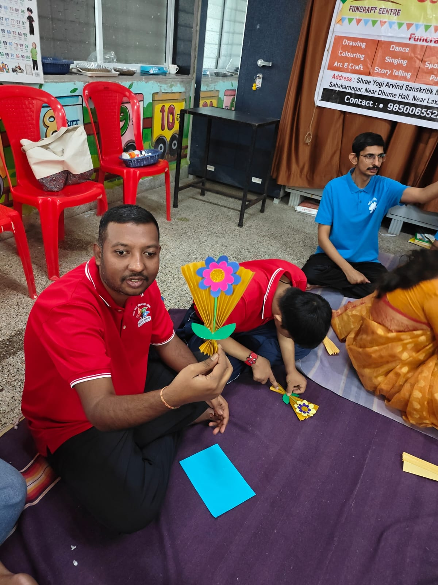

आमची गोष्ट
लॉकडाउनमधील एका प्रश्नापासून चिरस्थायी ध्येयापर्यंत
कलावैभव सेवाभावी संस्थेची स्थापना मार्च २०२२ मध्ये झाली, आणि तिच्या सुरुवातीमागे एक छोटीशी पण मनापासूनची गोष्ट आहे. कोविड-१९ च्या लॉकडाउनदरम्यान सर्वांसमोर एकच प्रश्न होता: विशेष विद्यार्थ्यांना गुंतवून कसे ठेवायचे?
हाच विचार करून आम्ही त्यांच्यासाठी ऑनलाइन सत्रे घ्यायला सुरुवात केली — संगीत, नृत्य, योग आणि बरेच काही. या सत्रांतून एक महत्त्वाची गोष्ट लक्षात आली: या विद्यार्थ्यांना स्वतंत्र छंद व कला उपक्रमाची गरज होती — असा अवकाश, जिथे सर्जनशीलतेतून त्यांचा शारीरिक व मानसिक विकास होऊ शकेल.
त्या कल्पनेतून एक संस्था उभी राहिली, जी सुरुवातीला फनक्राफ्ट या नावाने स्थापन झाली होती.


छंद व उपक्रम
योग्य दृष्टिकोन मिळाला, की गुण बहरतात
इतर सर्व मुलांप्रमाणेच दिव्यांग व्यक्तीही कलागुणांनी भरलेल्या असतात — आणि योग्य दृष्टिकोन मिळाल्यास त्या गुणांचे रूपांतर खऱ्या प्रगतीत होऊ शकते. ते स्वतःला व्यक्त करू शकतात. त्यांना निखळ आनंद अनुभवता येतो.
हे शक्य व्हावे म्हणून पुण्यातील सहकारनगर परिसरात दिव्यांग व्यक्तींसाठी छंद व कला उपक्रम सुरू करण्यात आला. नृत्य, नाट्य, चित्रकला, हस्तकला, शारीरिक उपक्रम, योग आणि म्युझिक थेरपी यांतून विद्यार्थ्यांचा शारीरिक व मानसिक विकास होतो.
हा उपक्रम अनुभवी शिक्षक व समुपदेशक चालवतात — त्यांपैकी अनेकांना दिव्यांग क्षेत्रात अनेक वर्षांचा अनुभव आहे — आणि ते आपला वेळ निःस्वार्थपणे देतात.
वर्गाच्या पलीकडे
विशेष उपक्रम
आमच्या विद्यार्थ्यांसाठी, पालकांसाठी आणि सदस्यांसाठी आम्ही आयोजित केलेले काही अनुभव, उत्सव आणि सहली.
- नवरात्रीनिमित्त आमच्या विशेष विद्यार्थ्यांच्या मातांचा सन्मान.
- विद्यार्थ्यांसाठी मेट्रो प्रवासाचा अनुभव (पुणे ते पिंपरी-चिंचवड).
- दिव्यांग क्षेत्रात कार्यरत असलेल्या कर्तृत्ववान महिलांचा नवरात्रीनिमित्त सत्कार.
- तळजाई उद्यानात निसर्गभेट (विद्यार्थी, पालक व सदस्य).
- गुरुपौर्णिमेनिमित्त सौ. मानसी जोशी यांचे कीर्तन.
- विद्यार्थ्यांना प्रत्यक्ष खरेदीचा अनुभव देणारी मॉल भेट.
- प्रथमेश रिसॉर्ट व मधुरांगण रिसॉर्ट येथे सामूहिक सहली (निवासी शिबिर).
- "ब्लेड्स ऑफ ग्लोरी" क्रिकेट म्युझियमला भेट.
- स्वातंत्र्यदिनानिमित्त सौ. सीमा डबके यांचे सैनिकांच्या जीवनावरील व्याख्यान.
- जागतिक महिला दिनानिमित्त पालकांचे औक्षण.
- पालकांसाठी समुपदेशनावर आधारित म्युझिक थेरपी, तसेच कायदेशीर पालकत्वावर व्याख्यान.
- MDF बोर्डवर गणपतीच्या मूर्ती रंगवणे (विद्यार्थी व पालक एकत्र).
- वार्षिक स्नेहसंमेलन.
पुढील वाटचाल
कलावैभव सेवाभावी संस्थेच्या भावी योजना!!
- पालकांसाठी मार्गदर्शन सत्रे.
- पालक व विशेष विद्यार्थ्यांसाठी समुपदेशन.
- दिव्यांग विद्यार्थ्यांसाठी व्यक्तिमत्त्व विकास.
- रोजगार व स्वावलंबन.
- कौशल्य विकास मार्गदर्शन.
- दिव्यांग विद्यार्थ्यांसाठी स्पर्धा (कला, क्रीडा इत्यादी).
- वार्षिक कला महोत्सव.
- आरोग्यसेवा.
- विविध थेरपी.
- स्वयंसेवक म्हणून नोंदणी.
- सामाजिक संस्थांसोबत भागीदारी.
- विद्यार्थी व पालकांच्या प्रेरणादायी कथा.
- विशेष विद्यार्थ्यांसाठी पुरस्कार व सन्मान.
- दिव्यांग व्यक्तींच्या हक्कांविषयी व कायद्यांविषयी माहिती.
- दिव्यांग व्यक्तींसाठीच्या विविध शासकीय योजना.
- कला, सांस्कृतिक मूल्ये, शिक्षण आणि सेवा यांतून प्रत्येक दिव्यांग विद्यार्थ्याला व त्यांच्या पालकांना आनंद देणे व प्रशिक्षण देणे.
भावी दृष्टिकोन २०३०
नवे प्रकल्प: महाराष्ट्रभर शाखा विस्ताराची योजना — यात दिव्यांगांसाठी कला अकादमी, निवासी सुविधा, प्रशिक्षण केंद्र आणि संशोधन व पुनर्वसन केंद्र यांचा समावेश आहे.
कलावैभव सेवाभावी संस्था ही नोंदणीकृत पब्लिक चॅरिटेबल ट्रस्ट आहे — नोंदणी क्र. F-0062918 (PUN). सर्व देणग्यांना 80G अंतर्गत प्राप्तिकर सवलत लागू आहे.